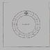
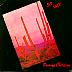
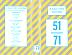
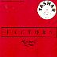

FAC 51
|
Additional Notes:
(ex-Factory's) Club at 11/13 Whitworth Street West, Manchester. Opened May 21st 1982.
There are also 2 badges (blue/yellow ~ 1983 and black/red ~ 1986) bearing this number.
Membership cards also carry this number. Designed by Peter Saville using his original Hacienda typographic identity. Around 6,000 were manufactured in early 1982, at incredible cost, by the company who manufactured Amex cards etc. This was before the Hacienda opened and when they thought they would need membership to resolve licensing issues. By the time of opening it was realised that this would be unnecessary and around 2,000 were embossed with names and numbers merely for the entertainment of the early habitués. Embossed cards may be worth more, with the right name. These do not come with the blue slip card holder developed to resell the redundant cards in the Fiona's fated Factory shop in Afflecks Palace Manchester in 1989. (AHW)
FAC 51B
|
Contents:
7": UK 1982 (Factory FAC 51B) [flexi-disc] 3:33 Rocking Carol */** 3:55 Ode to Joy * * Tracks unlabelled, but commonly known as indicated. ** Also known as 'We Will Rock You'.
Additional Notes:
Limited edition of 4400 given away at the Hacienda, Christmas Eve 1982. The label bears the message Merry Xmas from the Hacienda and Factory Records. A Bmusic Production 33 1/3. Peace on Earth Good Will to All Members
...it involved taking a New Order piece that they'd recorded for a local TV Xmas special the previous year and making a flexi out of it. (AHW)
|
|
FAC 52
|
Contents:
12": UK 1981 (Factory FAC 52) 4:09 Waterline 5:19 Funaezekea ~ Wet! ~ Hot
FAC 53
|
Contents:
7": UK 1981 (Factory FAC 53) 4:04 Procession 4:25 Everything's Gone Green ~ Soft ~ Hard
Additional Notes:
9 Different sleeves available: graphics in black, red, blue, brown, yellow, orange, green, aqua and purple, each on a grey background.
Contents:
VHS: UK 1981 (Factory FAC 54)
?:?? {misc footage}
Additional Notes:
Footage of the Hacienda under construction. Some of the material was used on FACT 71. Factory produced this video in a very small edition and sent it out to friends and interested parties (probably as a Xmas present).

|
FACT 55
|
Contents:
LP: UK 1982 (Factory FACT 55) 3:53 Lucinda 2:52 Crystal 2:57 Gum 7:31 Knife Slits Water 2:08 Skipscada 6:09 Day One 3:41 Rub Down 3:43 Rialto 3:58 Below the Canal ~ C.B.E. ~ All the Best Egghead!
Additional Notes:
Contains insert.

|
FACT 56
|
Contents:
VHS: UK 1982 (Factory FACT 56) [PAL/NTSC] BETA: UK 1982 (Factory FACT 56) [PAL/NTSC] 5:57 SECTION 25 - New Horizon ?:?? NEW ORDER - Ceremony * ?:?? A CERTAIN RATIO - Forced Laugh ?:?? ORCHESTRAL MANOEUVRES IN THE DARK - Electricity * ?:?? CABARET VOLTAIRE - No Escape 8:24 DURUTTI COLUMN - The Missing Boy * ?:?? KEVIN HEWICK - Ophelia's Drinking Song ?:?? THE NAMES - Nightshift ?:?? CRISPY AMBULANCE - The Presence ?:?? NEW ORDER - In A Lonely Place * ?:?? STOCKHOLM MONSTERS - Soft Babies * Live performance.
Additional Notes:
First edition in flip-top packaging.
Sometimes referred to as FACT 56V.
FAC 57
|
Contents:
7": UK 1982 (Factory FAC 57) 2:09 Secret Story 2:16 Island ~ This One's for Harry ~ The Twat
FAC 58
|
Contents:
7": UK 1982 (Factory FAC 58) 3:02 Happy Ever After 3:34 Soft Babies ~ The Way I See It Is... ~ It's Kinky in the Bath.
FAC 59
|
Contents:
7": UK 1982 (Factory FAC 59) [white label promo]
?:?? Look Into My Eyes *
?:?? Express *
12": UK 1982 (Factory FAC 59)
6:55 Look Into My Eyes
5:00 Express
~ Turbo Nose
~ Marcus One
* Edited versions.
|  |
FACT 60
|
Contents:
LP: UK 1982 (Factory FACT 60)
3:18 Judas
2:16 Testament
3:30 Patrol
5:50 The Old Men
4:13 Favour
4:58 Heartburn
5:01 An Immaculate Conception
Additional Notes:
The lawsuit was instigated by Hannett over Joy Division / New Order royalties after he'd left the company. The case was settled out of court in January 1984.
There seems to be stationary for this event!

|
FAC 62
|
Contents:
7": UK 1982 (Factory FAC 62-7)
3:52 Knife Slits Water
2:34 Tumba Rumba
~ The Sound Sound Goes Around Around
~ Zippy
12": UK 1982 (Factory FAC 62-12) *
9:44 Knife Slits Water
9:40 Kether Hot Knives (Mix in Special)
* Possibly catalogued as FAC 62T.
Additional Notes:
FAC 63
|
Contents:
7": UK 1982 (Factory FAC 63)
5:14 Temptation
4:42 Hurt
~ Try Listening to the 12"!
12": UK 1982 (Factory FAC 63)
7:26 Temptation
8:13 Hurt
~ What do you think?
Additional Notes:
FAC 64
|
Contents:
7": UK 1983 (Factory FAC 64) 3:37 I Get Along Without You Very Well 3:22 Prayer ~ Bring My Video Back! ~ Da Da
Additional Notes:
A-side is cover of Hoagy Carmichael tune. The woman singing is Lindsay Wilson, Tony Wilson's (now ex-) wife.

|
FACT 65
|
Contents:
LP: UK 1982 (Factory FACT 65) 5:05 Touch 3:46 Saturn 3:51 Hot Knights 5:11 I'd Like To See You Again 3:10 Show Case 3:51 Sesamo Apriti - Corco Vada 6:25 Axis 4:58 Guess Who ~ Don't You Dance ~ You Missed Your Chance
FAC 66
|
Contents:
12": UK 1982 (Factory FAC 66) 8:04 The Beast 3:46 Sakura 5:23 Sakura (Matrix Mix) 4:31 Trident * ~ So Sad: Without Love ~ Get Your Kicks on FAC 66 * Live in New York, February 1982. Likely one of the unreleased 'Live in America' LP (see FACTUS 9) tracks.
FAC 67
|
Contents:
12": UK 1982 (Factory FAC 67) 5:18 Go Exciting 5:51 Tingle
FAC 68
|
Contents:
7": UK 1983 (Factory FAC 68) 3:09 Back to Wonder 3:55 Beating Heart 12": UK 1983 (Factory FAC 68-12) [test pressing] 3:09 Back to Wonder 4:01 Beating Heart
FAC 69
|
|  |
FACT 70
|
Contents:
LP: UK 1982 (Factory FACT 70) 0:53 Samba Zippy (Part One) 4:20 El Figaro 5:34 Tender Game 4:05 Magic 4:13 Sunny Weather 4:34 Samba Zippy (Part Two) 4:20 No Sunshine 6:15 Spark the Flame 5:05 Secret Whispers ~ Killer! ~ Bummer
|  |
FACT 71
|
Contents:
VHS: UK 1983 (Factory FACT 71V) [PAL/NTSC]
BETA: UK 1983 (Factory FACT 71B)
2:45 {Hacienda Construction Footage} *
6:37 NEW ORDER - Your Silent Face
3:09 JAMES - Stutter
3:03 STOCKHOLM MONSTERS - Life's Two Faces
4:36 52nd STREET - The Rapp
3:43 A CERTAIN RATIO - Back to the Start
3:08 A CERTAIN RATIO - Showcase
4:05 SWAMP CHILDREN - You've Got Me Beat
4:29 DURUTTI COLUMN - The Beggar
5:17 THE WAKE - Uniform
4:48 SECTION 25 - Warhead
5:47 QUANDO QUANGO - Go Exciting
3:06 {Hacienda Venue Footage} **
* Instrumental primitive of NEW ORDER - 5-8-6 (Prime 5-8-6) used for
intro Hacienda construction footage.
** Instrumental mix of 52nd STREET - Cool As Ice used for outro
Hacienda venue footage.
Additional Notes:
All tracks live at The Hacienda Club, Manchester.
The packaging says in big numerals "51" / "71", illustrating the previous point (see also FAC 51).
Later releases on IKON with sticker stating: Special Notice: Ikon regrets that The Wake and Quando Quango soundtracks have had to be removed due to insistance of Island Music Ltd.

|
FAC 72
|
Contents:
7": UK 1983 (Factory FAC 72/7) [Promo] 4:00 I Need Someone Tonight (Edit) 4:28 Don't You Worry 'Bout a Thing 12": UK 1983 (Factory FAC 72-12) 5:34 I Need Someone Tonight 4:28 Don't You Worry 'Bout a Thing
Additional Notes:
FAC 73
|
Contents:
7": UK 1983 (Factory FAC 73) [promo]
?:?? Blue Monday
?:?? The Beach
12": UK 1983 (Factory FAC 73) *
7:29 Blue Monday
7:19 The Beach
~ Out Voted!
~ Ho El & Tel!
7": UK 1988 (Factory FAC 73-7)
4:05 Blue Monday 1988
4:14 Beach Buggy
12": UK 1988 (Factory FAC 73R)
7:09 Blue Monday 1988
6:52 Beach Buggy
12": UK 1988 (Factory FAC 73RD)
7:09 Blue Monday 1988
8:17 Blue Monday 1988 (DJ only mix)
CDS: UK 1988 (Factory FACD 73R)
7:09 Blue Monday 1988 (12 inch)
6:52 Beach Buggy (12 inch)
4:09 Blue Monday 1988 (7 inch)
CDV: UK 1988 (Factory FACDV 73R) [PAL]
7:09 Blue Monday 1988
6:52 Beach Buggy
4:09 Blue Monday 1988 (7" version)
?:?? Blue Monday 1988 (video)
* Later reissued in a non-die-cut sleeve. Original release had a silver
inner sleeve, later ones black.
Additional Notes:
Colour codes on FAC 73 spell FAC 73 Blue Monday And The Beach New Order
FAC 73R also allocated to promo video as seen on FACT 225

|
FACT 74
|
Contents:
LP: UK 1983 (Factory FACT 74) CS: UK 1986 (Factory FACT 74C) [boxed] * CD: UK 1988 (Factory FACD 74) ** CD: UK 1998 (Factory Once FACDO 74 / London 556 041-2) *** 3:24 Prayer 1:30 Response 3:30 Bordeaux 2:48 For A Western 4:55 The Beggar 3:01 Francesca 5:03 Smile In The Crowd 4:41 You've Heard It Before 5:22 Dream Of A Child 2:38 Second Family 4:25 Spent Time 3:59 Friends In Portugal *** 3:21 Small Girl By A Pool *** 4:10 Lisbon *** 2:58 Sara and Tristana *** 2:55 Nighttime Estoril *** 4:49 Favourite Descending Intervals *** 1:24 To End With *** ~ Carol ~ Sex For Spastics * With inserts. ** CD released as part of FACD 224. *** From "Amigos em Portugal", remastered from vinyl
Additional Notes:
Initially released with perfumed cut-out insert.
LP cover/insert and CD listings all specify tracks incorrectly
FACT 75
|
Contents:
LP: UK 1983 (Factory FACT 75) CS: UK 1983 (Factory FACT 75C) CS: UK 1985 (Factory FACT 75C) [boxed] * CD: UK 1986 (Factory FACD 75) ** 5:13 Age of Consent 5:13 We All Stand 4:36 The Village 7:28 5 8 6 5:58 Your Silent Face 4:48 Ultraviolence 4:24 Ecstasy 4:38 Leave Me Alone * With inserts. ** First edition with 'car carry case', which is in fact a 5" version of the FAC 73 'floppy' sleeve, complete with cut-outs.
Additional Notes:
Colour codes on the LP inner sleeve spell Power Corruption And Lies New Order. It's possible that Corruption is spelled Corrutirn on some releases.
Colour codes on the cover spell FACT75 or FACD75 depending on the format.
Factory created a sculpture based on FAC 47 to mark 500,000 sales of FACT 75, although it marks Factory FAC 75 500000, so perhaps this could be a pseudo FAC 75 ? Who knows... :)
Additional Notes:
The Jazz Defektors Film was an eight minute video, which has never been released. A fragment can be seen on the Doublevision Wipeout video.

|
FACT 77
|
Contents:
VHS: UK 1983 (Factory FACT 77)
BETA: UK 1983 (Factory FACT 77)
2:55 {Opening titles - silent}
4:00 I.C.B. *
3:00 Dreams Never End
4:52 Everything's Gone Green
4:20 Truth
4:33 Senses
3:44 Procession
4:30 Ceremony
4:50 Little Dead **
10:25 Temptation
3:10 {End titles - silent}
* Actually "Chosen Time".
** Actually "Denial".
Additional Notes:
Live from the Ukranian National Home, New York, 11/18/81
FAC 78
|
Contents:
7": UK 1983 (Factory FAC 78) 2:46 Folklore 1:52 What's the World 1:46 Fire So Close ~ Jim One! ~ Karen
FAC 79
|
Contents:
12": UK 1983 (Factory FAC 79) 12": DE 1983 (Factory Herne FAC 92) 7:49 Love Tempo 7:14 Love Tempo (Mix) ~ Happy Birthday Mr. Crocker ~ Radical - To the Roots
Additional Notes:
In stickered F-dot die-cut custom bag.
Issued by Factory in Germany as FAC 92!
There is also an item with the catalogue number FACX 79. It's Factory's first Xmas present. A sticker states FACX 79, This Christmas Feel Safe with Modern Music. The item was released for Xmas 1979, hence the catalogue number, and the design is based on the FAC 1 and 2 imagery - the Use Hearing Protection warning symbol. Each of the 120 packs made were a 1" x 1" red Plastic box with two rubber ear-plugs sourced from Industrial supply firm in Gorton, Manchester. A small silver chain is attached to each box along with a black and silver sticker on the box.
FACT 80
|
Contents:
LP: UK 1984 (Factory FACT 80) 2:53 Terror 2:31 Where I Belong 5:28 Decalogue 3:08 Winter 2:38 Five o'clock 3:25 Life's Two Faces 2:51 Your Uniform 3:31 E. W. 4:47 To Look At Her 1:37 Something's Got To Give ~ You Know What Tonight Is! ~ And What Goes!
FAC 81
|
Additional Notes:
The note paper is a sheet of A5 grey paper with black printing (a la FAC 7), saying Factory 1st International Congress, 6:15 pm, September 10th 1983. The Connaught Building, 56-60 George Street, Chinatown, Manchester, England - Fac 81.
|  |
FAC 82
|
Contents:
12": UK 1983 (Factory FAC 82) 12": DE 1983 (Factory Herne FAC 82) 7:20 Yashar 5:00 Yashar ~ Now you have entered the outer limits ~ Is there a limit anymore
Additional Notes:
In stickered red A Factory Records Giant Single custom bag.
Matrix of vinyl states FAC 82T.

|
FAC 83
|
Additional Notes:
Poster/card for the Hacienda's first birthday party 20-21 May, 1983.
FACT 84
|
Contents:
LP: UK 1984 (Factory FACT 84) CS: UK 1986 (Factory FACT 84C) [boxed] * 18:46 Without Mercy I 19:35 Without Mercy II ~ Oh What Can Ail Thee Knight At Arms! ~ For The Child! CD: UK 1988 (Factory FACD 84) ** CD: UK 1998 (Factory Once FACDO 84 / London 556 039-2) *** 18:46 Without Mercy I 19:35 Without Mercy II 1:50 Goodbye 6:00 The Room 3:37 Little Mercy 7:44 Silence 4:35 E.E. 1:05 Hello 3:38 All That Love And Maths Can Do *** / **** 3:30 The Sea Wall *** / ***** * With inserts. ** Released as part of FACD 224 **** From FBN 51 ***** From Hommage a Duras compilation on Interior Music
Additional Notes:
CDs include tracks from FAC 114

|
FACT 85
|
Contents:
LP: UK 1984 (Factory FACT 85) 3:10 Troglodytes 4:15 Sudan 3:33 Crime 2:50 Help * 5:10 Fred + Andy ** 3:25 Misuse 3:11 Nuns + Soldiers 3:35 DB 3:43 Babcock + Wilcox 4:47 Jess + Bart 2:50 Hank ~ Gillian's OK * Version of "I Can Help" by Billy Swan. * Version of "Something's Gotta Give" by Arthur Blake and "Moon River" by Mercer + Mancini
Additional Notes:
Title originally thought to be "Two Crazy Cowboys", but the cover definitely says "Too...". This contradicts FAC 131.
FAC 86
|
Additional Notes:
Hacienda modelkit, and Factory's 1983 Xmas present. It takes the form of 5 A4 cardboard pieces, that when cut out and assembled make a model of the Hacienda! The set comes with a black & white banderolle saying 'The Hacienda Must be Built' and a Xmas message. The whole thing is packed in a brown envelope.
In 1990 the model was reprinted as FAC 86R, with the banderolle now being blue and white and missing the Xmas message. FAC 86R was sold at FAC 281 for a while.
FAC 87
|
Contents:
7": UK 1984 (Factory 7 FAC 87) [white label promo] 3:58 The Smiling Hour (Edit) 3:39 Fly Away (Edit) ~ Radio ~ Radio 12": UK 1984 (Factory FAC 87-12) 4:20 The Smiling Hour 5:13 Fly Away
FAC 88
|
Contents:
7": UK 1984 (Factory FAC 88) 3:47 Talk About the Past 3:15 Everybody Works So hard 12": UK 1984 (Factory FAC 88-12) 6:18 Talk About the Past 5:27 Everybody Works So hard

|
FACT 89
|
Contents:
VHS: UK 1983 (Factory FACT 89) [PAL/NTSC]
BETA: UK 1983 (Factory FACT 89) [PAL/NTSC]
{Live performance - no songs}
Additional Notes:
Live video filmed at the Edinburgh fringe festival.
FACT 90
|
Contents:
LP: UK 1984 (Factory FACT 90) CS: UK 1986 (Factory FACT 90C) [boxed] 5:09 The Process 4:06 Looking From a Hilltop 4:30 Reflection 3:24 Prepare to Live 3:55 Program for Light 3:12 Desert 4:13 Beneath the Blade 6:40 Inspiration
Additional Notes:
Coded in the coloured posts on the front sleeve image is 'From the Hip', using the same code as on FACT 75.
Additional Notes:
Apparently a game for home micro's. Apparently something to do with 'Blue Monday' and Stephen Morris learning to program. It never got past the idea stage.
It's possible that some of the work appears in the BM clip on FACT 137.
FAC 92
|
Contents:
7": UK 1984 (Factory FAC 92) [white label promo] 7": UK 1984 (Factory FAC 92DJ) [white label promo] 4:40 Reach for Love (Edit) 5:19 Keep on Dancing (Edit) 12": UK 1984 (Factory FAC 92) 4:26 Reach for Love 6:17 Keep on Dancing 12": UK 1985 (Factory FAC 92R) * 5:27 Reach for Love (Extended) 7:41 Reach for Love (Dub) 3:31 Keep On Dancing (Dub) * In F-dot custom bag. Labels on both sides say "Reach For Love (Dub)" with "Mark Kamins New York Remix" overlayed diagonally. Track on A Side isn't a "dub", but an extended mix. The two B Side tracks are definitely "dubs". It should also be noted that on the B Side "Reach For Love" dub, they liberally sample the bass riff from FAC 111.
Additional Notes:
Number allocated by Factory Herne in Germany to what is actually FAC 79
FAC 93
|
Contents:
7": UK 1983 (Factory 7 FAC 93) [promo] * 4:08 Confusion (edit) 4:08 Confusion (edit) 12": UK 1983 (Factory FAC 93) 8:13 Confusion 5:19 Confusion Beats 7:33 Confusion Instrumental 8:04 Confusion Rough Mix ~ Not the Way I Would've Done It! * Labelled 'For Heavy Rotation Only'.
Additional Notes:
FAC 93 also allocated to promo video as seen on FACT 225.
Colour codes on the cover spell 'FAC93'.
Additional Notes:
Badge released in 2 editions, red and black, 200 printed of each.
Logo first used for FAC 79, and later incorporated in the embossed Dance-12" custom sleeves.
FACT 95
|
Contents:
LP: UK 1984 (Factory FACT 95) 3:50 I Love You (Restrained in a Moment) 4:05 Voices 3:46 Moonfish is Here 4:17 Dark and Light 6:44 Radio Egypt 4:05 Discipline 3:30 The Dawn Song 4:)2 Ritual 1 5:10 Power of Will 5:42 Motherland ~ The Mark of the Donkey ~ Aaaargh! It's 555
Additional Notes:
Includes 4" x 6" 16-page booklet 'The Project Transmissions Phase 1'.
This album, produced by Peter Hook / BEmusic, is one of Factory's best kept secrets (!). A video version was set for release with the same catalogue number, but never released. A short part can be found on FACT 137.
FAC 96
|
Contents:
7": UK 1984 (Factory FAC 96) 3:12 Telstar 5:05 Telstar in a Piano Bar ~ Include Me Out
Additional Notes:
Ad Infinitum was Peter Hook and members of Stockholm Monsters.
FAC 97
|
Contents:
12": UK 1984 (Factory FAC 97) 5:25 Act on Instinct (Hot Swedish Mix) 6:17 Act on Instinct (Cold Swedish Mix) 4:47 Act on Instinct (Lowlands Mix) ~ Never Mind Harry ~ Here's Wally the Twat * * Wally = Wally van Middendorp, singer of Minny Pops. Streetlife was a side project.
FAC 98
|
Additional Notes:
Hairdressing Salon located in the basement of the Hacienda.
Additional Notes:
A dentist bill paid for by Factory. It has something to do with Gretton being beaten up by the guys of ACR!
FACT 100
|
Contents:
LP: UK 1985 (Factory FACT 100)
CD: UK 1985 (Factory FACD 100) *
4:18 Love Vigilantes
4:48 The Perfect Kiss
4:43 This Time of Night
5:58 Sunrise
4:53 Elegia
5:11 Sooner Than You Think
4:54 Sub-culture
5:03 Face Up
CS: UK 1985 (Factory FACT 100C) [boxed] **
CS: UK 1985 (Factory FACT 100C)
4:18 Love Vigilantes
4:48 The Perfect Kiss
4:43 This Time of Night
5:58 Sunrise
8:45 The Perfect Kiss ***
4:53 Elegia
5:11 Sooner Than You Think
4:54 Sub-culture
5:03 Face Up
7:00 The Kiss of Death
1:23 Perfect Pit
* First edition with 'car carry case', in plain white with 'NewOrder' in
silver/black.
** Factory's first boxed cassette release. With set of inserts in
ricepaper gatefold.
*** 12" version from FAC 123.
Additional Notes: